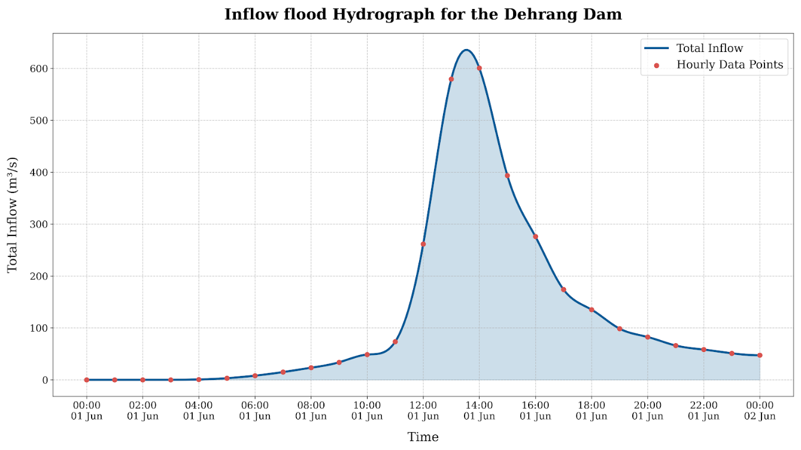

4. Hydrology and HEC-HMS Methodology¶
4.1 Overview of Hydrologic Assessment¶
A detailed hydrologic analysis was performed using HEC-HMS 4.13 to simulate the rainfall-runoff response of the Dehrang catchment and generate the design inflow hydrograph to the reservoir. The Dehrang catchment (27.00 km2) was delineated into three subbasins (Subbasin-1, Subbasin-2, and Subbasin-3) based on GIS topographic analysis of the Copernicus GLO-30 DEM. The subbasins drain into a single outlet (Sink-1 representing the Dehrang reservoir) via a reach routing element (Reach-1, Muskingum method).
The catchment is situated in the Western Ghats foothills and exhibits physiographic characteristics typical of steep, forested Konkan terrain: flashy runoff response, near-saturated antecedent conditions during monsoon, and rocky sub-surface geology limiting deep percolation. Subbasin-3 has the steepest overall slope (basin slope 0.365 m/m, basin relief 719 m) and the longest flowpath (7.21 km), while Subbasin-2 is the smallest and flattest (basin relief 104 m, longest flowpath 1.96 km).
4.2 HEC-HMS Model Configuration¶
The HEC-HMS Basin Model (Basin 1) for the Dehrang catchment comprises the following elements:
-
3 Subbasin elements: Subbasin-1, Subbasin-2, and Subbasin-3 representing the GIS-delineated drainage areas
-
1 Reach element: Reach-1, using Muskingum channel routing to convey flows between subbasins
-
1 Sink element: Sink-1, representing the Dehrang reservoir inflow point
The meteorological model (100Yr_Storm_IDF) was configured as:
-
Storm type: Hypothetical Storm (SCS Type II, 24-hour)
-
Total 100-year 24-hour design depth: 486.72 mm (from Gumbel EV-I frequency analysis)
-
Loss method: SCS Curve Number with AMC-II antecedent moisture conditions
-
Transform method: SCS Unit Hydrograph (Standard PRF 484)
-
Routing method: Muskingum (Reach-1)
-
Baseflow: Not included (conservative assumption for design flood)
| Parameter | Value |
|---|---|
| Project | Dehrang_DesignFloodDBA |
| Simulation Run | Run_100Yr_Storm_IDF |
| Total Catchment Area | 27.00 km2 |
| Number of Subbasins | 3 (Subbasin-1, Subbasin-2, Subbasin-3) |
| Routing Reach | Reach-1 (Muskingum) |
| Design Storm | Hypothetical Storm, SCS Type II, 24-hr |
| Design Rainfall P24,100 | 486.72 mm (Gumbel EV-I, 100-yr) |
| Loss Method | SCS Curve Number |
| Transform Method | SCS Unit Hydrograph (Standard PRF 484) |
| Baseflow | None |
Table 7: HEC-HMS Model Configuration Summary
4.3 Watershed Physical Characteristics¶
4.3.1 Subbasin Physical Parameters¶
GeoHMS was used to extract the physical parameters for each subbasin from the conditioned DEM. These parameters drive the SCS lag time computation and characterise the hydrologic response of each drainage unit. The full set of extracted parameters is presented in Table 8.
| Parameter | Subbasin-1 | Subbasin-2 | Subbasin-3 | Units |
|---|---|---|---|---|
| Longest Flowpath Length | 5.48176 | 1.95595 | 7.21202 | km |
| Longest Flowpath Slope | 0.06604 | 0.04959 | 0.09956 | m/m |
| Centroidal Flowpath Length | 2.76809 | 1.01240 | 3.69739 | km |
| Centroidal Flowpath Slope | 0.00867 | 0.00839 | 0.01406 | m/m |
| 10-85 Flowpath Length | 4.11132 | 1.46697 | 5.40901 | km |
| 10-85 Flowpath Slope | 0.03266 | 0.03648 | 0.11918 | m/m |
| Basin Slope | 0.30963 | 0.14472 | 0.36520 | m/m |
| Basin Relief | 595.00 | 104.00 | 719.00 | m |
| Relief Ratio | 0.10854 | 0.05317 | 0.09969 | - |
| Elongation Ratio | 0.72240 | 0.47048 | 0.60651 | - |
| Drainage Density | 0.10647 | 0.15787 | 0.19021 | km/km2 |
Table 8: HEC-HMS Subbasin Physical Characteristics (GeoHMS - Copernicus DEM)
Subbasin-3 is the dominant hydrologic unit with the steepest terrain (basin slope 0.365 m/m, basin relief 719 m, longest flowpath 7.21 km). Subbasin-1 has the longest centroidal flowpath (2.77 km) and the highest elongation ratio (0.722), indicating a more elongated shape that tends to spread out the runoff response. Subbasin-2 is the smallest unit (lowest basin relief of 104 m, shortest flowpath of 1.96 km) with the lowest drainage density, and contributes directly to the reservoir (Sink-1) without passing through Reach-1.
4.3.2 SCS Curve Number and Initial Abstraction¶
Composite Curve Numbers for each subbasin were determined using a GIS overlay of the ESRI Living Atlas LULC classification (10-metre resolution, Sentinel-2 2024) and USDA soil hydrologic group maps for the Raigad district. The Dehrang catchment soils are predominantly Hydrologic Groups B and C (lateritic and basaltic geology). AMC-II (average antecedent moisture) conditions were applied, appropriate for a mid-monsoon design event. The Initial Abstraction (Ia) was computed using the standard SCS formula $$ I_a = 0.2 \cdot S \quad \text{where} \quad S = \frac{25400}{CN} - 254 $$
| Subbasin | Curve Number (CN) | Initial Abstraction Ia (mm) | Impervious (%) |
|---|---|---|---|
| Subbasin-1 | 74.41 | 17.47 | 0.0 |
| Subbasin-2 | 80.28 | 12.48 | 0.0 |
| Subbasin-3 | 76.51 | 15.60 | 0.0 |
Table 9: SCS Curve Number and Initial Abstraction by Subbasin
Subbasin-2 has the highest CN (80.28), reflecting a greater proportion of developed/low-permeability land cover and/or heavier soils (Group C). Subbasin-1 has the lowest CN (74.41), consistent with dense natural forest and Group B soils.
4.3.3 Reach Routing - Muskingum Parameters¶
Reach-1 routes the combined outflow from Subbasin-3 and Subbasin-1 toward Sink-1 using the Muskingum method. The reach has a length of 0.09 km immediately upstream of the reservoir inflow point. The Muskingum storage constant K = 0.24 hr represents the travel time through the reach; the weighting parameter X = 0.4811 indicates near-equal weighting of inflow and outflow, consistent with a relatively steep, short channel segment.
| Parameter | Value | Units |
|---|---|---|
| Reach Name | Reach-1 | - |
| Length | 0.09 | km |
| Channel Slope | 0.00000 | m/m |
| Sinuosity | 1.00000 | - |
| Routing Method | Muskingum | - |
| Muskingum K | 0.24 | hr |
| Muskingum X | 0.4811 | - |
| Number of Subreaches | 1 | - |
| Initial Type | Discharge = Inflow | - |
Table 10: Reach-1 Physical and Muskingum Routing Parameters
4.4 Rainfall Input and Design Storm¶
The 100-year 24-hour design rainfall of 486.72 mm (Gumbel EV-I) was applied to all three subbasins using the HEC-HMS Hypothetical Storm model with the SCS Type II temporal distribution. The SCS Type II distribution is the standard distribution paired with the SCS Unit Hydrograph method and concentrates peak rainfall intensity in the middle of the storm event (Hours 11-13 of 24), generating the highest peak discharge response for this catchment type.
All subbasins receive the same total depth of 486.72 mm. The uniform rainfall assumption is appropriate for the relatively compact catchment (27 km2) where spatial variability in extreme rainfall is not expected to be significant over the storm duration.
4.5 Time of Concentration and SCS Lag Time¶
The SCS lag time (tL) for each subbasin was computed internally by HEC-HMS using the SCS lag formula from subbasin physical parameters. The Time of Concentration (Tc) is derived as Tc = tL / 0.6, consistent with standard SCS methodology. The lag times reflect the steep terrain and short flowpaths of the Western Ghats catchment, resulting in rapid hydrologic response.
| Subbasin | Graph Type | SCS Lag Time (min) | Tc (min) |
|---|---|---|---|
| Subbasin-1 | Standard (PRF 484) | 125.72 | 209.53 |
| Subbasin-2 | Standard (PRF 484) | 43.78 | 72.97 |
| Subbasin-3 | Standard (PRF 484) | 77.14 | 128.57 |
Table 11: SCS Unit Hydrograph Lag Time and Time of Concentration by Subbasin
Subbasin-1 has the longest lag time (125.72 min, Tc = 209.53 min) corresponding to its longer flowpath (5.48 km) and moderate slope. Subbasin-2 has the shortest lag time (43.78 min, Tc = 72.97 min) consistent with its compact drainage area and short flowpath of 1.96 km. Subbasin-3, despite having the longest flowpath (7.21 km), has an intermediate lag time (77.14 min) owing to its steep 10-85 flowpath slope of 0.119 m/m.
4.6 Inflow Hydrograph Results¶
The HEC-HMS simulation (Run_100Yr_Storm_IDF) was executed for the period 01 June 2025 00:00 to 02 June 2025 00:00 (24-hour simulation window). The reservoir inflow hydrograph at Sink-1 is the sum of routed flows from Reach-1 (carrying Subbasin-1 and Subbasin-3 contributions) and direct inflow from Subbasin-2. Key results are:
-
Peak Discharge: 600.3985 m3/s at 01 Jun 2025, 14:00 hrs
-
Total Inflow Volume: 10,822.487 x 10^3 m3 (10.822 MCM)
-
Time to Peak from Storm Start: 14 hours
-
Rise Time (0 to Peak): approximately 11 hours (rapid rising limb, typical of steep Western Ghats catchments)
The complete hourly inflow hydrograph is presented in Table 12. The dominant contribution at peak is from Reach-1 (591.84 m3/s at 14:00) reflecting the combined and routed flows from Subbasin-1 and Subbasin-3. Subbasin-2 contributes a secondary peak of 21.996 m3/s at Hour 12, slightly ahead of the main peak, consistent with its shorter lag time.
| Parameter | Value |
|---|---|
| Sink | Sink-1 (Reservoir Inflow) |
| Peak Discharge | 600.3985 m3/s |
| Date / Time of Peak | 01 Jun 2025, 14:00 hrs |
| Total Inflow Volume | 10,822.487 x 10^3 m3 (10.822 MCM) |
| Simulation Start | 01 Jun 2025, 00:00 |
| Simulation End | 02 Jun 2025, 00:00 |
| Time to Peak from Start | 14 hours |
| Basin Model | Basin 1 |
| Meteorologic Model | 100Yr_Storm_IDF (SCS Type II, 24-hr) |
| Control Specifications | Control IDF |
Table 12: HEC-HMS Summary Results - Dehrang Reservoir Inflow (Sink-1)
| Date | Time | Inflow from Reach-1 (m3/s) | Inflow from Subbasin-2 (m3/s) | Total Inflow to Reservoir (m3/s) |
|---|---|---|---|---|
| 01Jun2025 | 00:00 | 0.0000 | 0.0000 | 0.0000 |
| 01Jun2025 | 01:00 | 0.0000 | 0.0000 | 0.0000 |
| 01Jun2025 | 02:00 | 0.0000 | 0.0000 | 0.0000 |
| 01Jun2025 | 03:00 | 0.0115 | 0.0293 | 0.0407 |
| 01Jun2025 | 04:00 | 0.5320 | 0.1569 | 0.6888 |
| 01Jun2025 | 05:00 | 2.8021 | 0.3444 | 3.1465 |
| 01Jun2025 | 06:00 | 7.4646 | 0.5649 | 8.0295 |
| 01Jun2025 | 07:00 | 14.1382 | 0.8042 | 14.9424 |
| 01Jun2025 | 08:00 | 22.2742 | 1.0518 | 23.3261 |
| 01Jun2025 | 09:00 | 32.3676 | 1.4508 | 33.8185 |
| 01Jun2025 | 10:00 | 46.6645 | 2.0052 | 48.6697 |
| 01Jun2025 | 11:00 | 70.1337 | 3.2104 | 73.3441 |
| 01Jun2025 | 12:00 | 239.6509 | 21.9958 | 261.6467 |
| 01Jun2025 | 13:00 | 562.0661 | 17.3639 | 579.4300 |
| 01Jun2025 | 14:00 | 591.8404 | 8.5581 | 600.3985 |
| 01Jun2025 | 15:00 | 388.7115 | 4.6518 | 393.3634 |
| 01Jun2025 | 16:00 | 272.8277 | 3.0591 | 275.8868 |
| 01Jun2025 | 17:00 | 171.7661 | 2.2674 | 174.0335 |
| 01Jun2025 | 18:00 | 133.3370 | 1.8743 | 135.2113 |
| 01Jun2025 | 19:00 | 96.9420 | 1.6164 | 98.5584 |
| 01Jun2025 | 20:00 | 81.1357 | 1.3927 | 82.5284 |
| 01Jun2025 | 21:00 | 64.8610 | 1.2183 | 66.0794 |
| 01Jun2025 | 22:00 | 57.1328 | 1.1290 | 58.2618 |
| 01Jun2025 | 23:00 | 50.0502 | 1.0699 | 51.1201 |
| 02Jun2025 | 00:00 | 46.4185 | 1.0255 | 47.4440 |
Table 13: HEC-HMS Hourly Inflow Hydrograph at Reservoir (Sink-1) - 100-Year 24-Hour Storm [Peak row highlighted]

Figure 3.3: 100-Year Design Storm Hydrograph
4.7 Interpretation for Dam Break Analysis¶
The peak inflow of 600.3985 m3/s at Hour 14 is sharply defined, with the hydrograph rising steeply from 73.34 m3/s (Hour 11) to 600.40 m3/s (Hour 14) within three hours. This rapid rise reflects the high rainfall intensities delivered by the SCS Type II storm in the central period combined with the steep, responsive nature of the catchment. The total inflow volume of 10.822 MCM significantly exceeds the current reservoir gross storage of 2.352 MCM at FRL, confirming that overtopping is hydrologically plausible under the 100-year design event if the reservoir is at or near FRL at storm onset and gates are unable to discharge sufficiently.
For the piping failure scenario, the inflow boundary condition is set to a constant baseflow of 3 m3/s, representing typical fair-weather low-flow conditions in the Gadhi River during the pre-monsoon period, appropriate for a non-flood structural failure event.